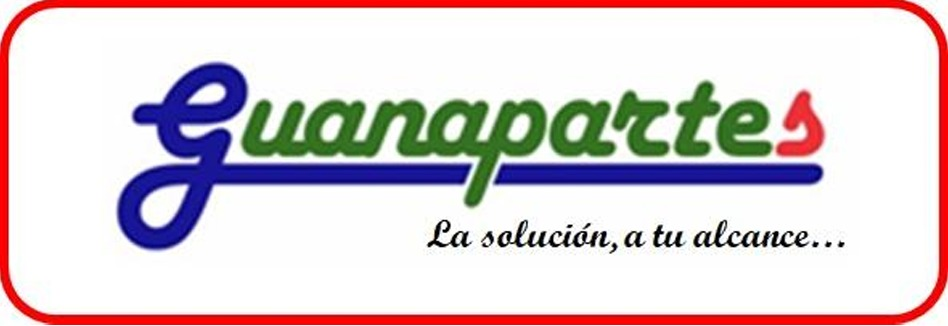

Consulta por tu repuesto
Envíanos un mensaje para consultar disponibilidad, compartir fotografías y coordinar los detalles de tu pedido.
+506 2101-4422
Abrir chat
Repuestos para el trabajo de cada día
Cañas, Guanacaste
ESTAMOS PARA AYUDARTE
Para ayudarte con tu consulta, ten a mano el código del repuesto, la marca y el modelo de tu maquinaria. También puedes enviarnos una fotografía por WhatsApp.
Envíanos un mensaje para consultar disponibilidad, compartir fotografías y coordinar los detalles de tu pedido.
+506 2101-4422
Abrir chatLlámanos durante nuestro horario de atención para conversar sobre los productos que necesitas.
Escríbenos con tu consulta y los datos del repuesto. Incluye un medio de contacto para que podamos responderte.
Escribir un correoVISITA GUANAPARTES
Acércate a nuestro local y consulta por repuestos para tu maquinaria e implementos agrícolas.
Guanapartes S.A. 25 metros este del redondel de Cañas Cañas, Guanacaste, Costa Rica.Para consultar el horario en días feriados, comunícate con nosotros antes de tu visita.
NUESTRAS REDES
Este espacio reunirá nuestros perfiles oficiales de Facebook e Instagram.
Próximamente encontrarás aquí nuestro perfil.
Próximamente encontrarás aquí nuestro perfil.